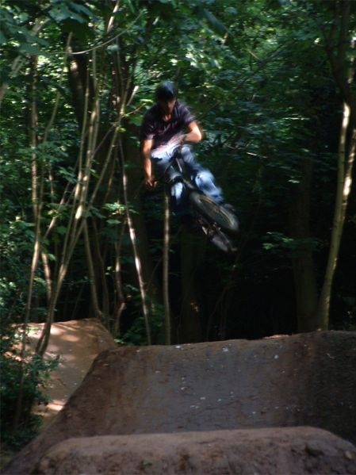

|
 |
Once again I have no riding pictures because of all the rain and stuff so here are some riding pictures that didn't get enough attention in the summer. I think the riding is by Pipe, Bamber and Todge. The trails were built by Jimmy. I wonder if these trails are still here? Will they be for much longer? I doubt it. The trailscene in the UK is definatly on the way out. Start petitioning your council for a skatepark now because by the time it's done trails will be illegal. You'll see a table picture if you have a large screen resolution. Thanks to derelict dave for the help with the layout. |